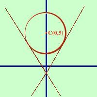

|
Trovare le equazioni delle rette tangenti alla circonferenza x2+ y2 -10y + 9 = 0 condotte dal punto A(0,-1) Considero il fascio di rette y - y0 = m(x - x0) passante per il punto A(0,-1) y + 1 = m(x - 0) eseguo i calcoli y = mx -1 metto a sistema l'equazione del fascio con l'equazione della circonferenza x2+ y2 -10y + 9 = 0 sostituisco per ottenere l'equazione risolvente x2+ (mx - 1)2 -10(mx - 1) + 9 = 0 sviluppo x2+ m2x2 - 2mx + 1 -10mx + 10 + 9 = 0 Raccolgo tra loro i termini con x2 ed i termini con x per evidenziare l'equazione di secondo grado (1+ m2)x2 - 12mx + 20 = 0 Ora pongo il Delta (potrei fare il delta quarti) uguale a zero 64m2- 80 = 0 semplifico per 16 4m2 - 5 = 0 m = ---------- = ---------- 4 2 Le due rette tangenti sono:  y = --------- x - 1 2 e - y = --------- x - 1 2 A destra la rappresentazione grafica |